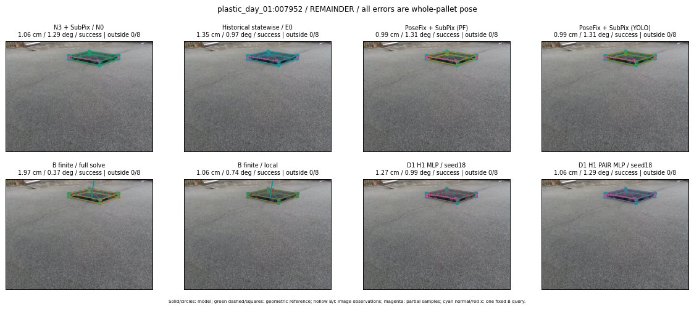

Whole-pallet pose errors; reference is a fixed geometric annotation, not certified physical GT.

Scores are uncalibrated logits. N0 retention is a numerical pose alias; it differs from H0 none or B fallback. B/I and profiles in baseline/B panels are original observations; L panels use new D1 observations. Only one deterministic supported B query is shown in a thumbnail; full support counts are below. Grey privacy rectangles edit the display copy only and are unrelated to O states; all observations were measured on original pixels. Thumbnails use JPEG quality85; detailed scientific panels are PNG.
| Method | Whole pose / cm, deg | Actual source | Selected ID | Score | Archived candidates | Eligible | N0 retained | H0 none | Fallback | Finite profiles |
|---|---|---|---|---|---|---|---|---|---|---|
| Raw YOLO + F | 14.25 cm / 0.96 deg / failure | OTHER | None | N/A | N/A | N/A | False | N/A | None | N/A |
| N3 + SubPix / N0 | 1.06 cm / 1.29 deg / success | N0 | None | N/A | N/A | N/A | True | N/A | None | N/A |
| Historical statewise / E0 | 1.35 cm / 0.97 deg / success | E0_REGENERATED | None | N/A | N/A | N/A | False | N/A | False | N/A |
| PoseFix raw | 13.31 cm / 0.81 deg / failure | OTHER | None | N/A | N/A | N/A | False | N/A | None | N/A |
| PoseFix + SubPix (PF) | 0.99 cm / 1.31 deg / success | OTHER | None | N/A | N/A | N/A | False | N/A | False | historical support records 9; finite audit N/A |
| PoseFix + SubPix (YOLO) | 0.99 cm / 1.31 deg / success | OTHER | None | N/A | N/A | N/A | False | N/A | False | historical support records 9; finite audit N/A |
| Historical L, seed18 | 1.06 cm / 1.29 deg / success | N0 | N0 | N/A | 70 | 69 | True | True | True | N/A |
| Historical B fixed bank | 1.27 cm / 0.99 deg / success | OTHER | G10/ORIGINAL_WD/sample/2 | N/A | N/A | N/A | False | N/A | False | N/A |
| Historical B full | 23.81 cm / 83.72 deg / failure | OTHER | NEW/B/SWAPPED_WD/h2/G13/SWAPPED_WD/sample/6/PROPOSED_NATIVE_YAW_2 | N/A | N/A | N/A | False | N/A | False | N/A |
| Historical edge full | 35.86 cm / 80.54 deg / failure | OTHER | NEW/edge/SWAPPED_WD/h0/G13/SWAPPED_WD/sample/0/PROPOSED_NATIVE_YAW_0 | N/A | N/A | N/A | False | N/A | False | N/A |
| Historical AB full | 23.59 cm / 84.06 deg / failure | OTHER | NEW/AB/SWAPPED_WD/h0/G13/SWAPPED_WD/sample/0/PROPOSED_NATIVE_YAW_0 | N/A | N/A | N/A | False | N/A | False | N/A |
| B finite / fixed bank | 1.27 cm / 0.99 deg / success | OTHER | G10/ORIGINAL_WD/sample/2 | N/A | N/A | N/A | False | N/A | False | 20/20 |
| B finite / full solve | 1.97 cm / 0.37 deg / success | OTHER | NEW_FINITE/B/ORIGINAL_WD/h0/G13/ORIGINAL_WD/sample/0/PROPOSED_NATIVE_YAW_0 | N/A | N/A | N/A | False | N/A | False | 20/20 |
| B finite / local | 1.06 cm / 0.74 deg / success | OTHER | NEW_FINITE/B/ORIGINAL_WD/h0/N0_LOCAL_SAME_PHYSICAL_POSE/ORIGINAL_WD | N/A | N/A | N/A | False | N/A | False | 20/20 |
| Edge finite / full solve | 2.03 cm / 1.13 deg / success | OTHER | NEW_FINITE/edge/ORIGINAL_WD/h0/G13/ORIGINAL_WD/sample/0/PROPOSED_NATIVE_YAW_0 | N/A | N/A | N/A | False | N/A | False | 20/20 |
| D0 H0 MLP / seed18 | 1.06 cm / 1.29 deg / success | N0 | N0 | 3.9131126403808594 | 36 | 35 | True | True | True | N/A |
| D0 H0 MLP / seed19 | 1.06 cm / 1.29 deg / success | N0 | N0 | 4.304317951202393 | 36 | 35 | True | True | True | N/A |
| D0 H0 MLP / seed20 | 1.06 cm / 1.29 deg / success | N0 | N0 | 2.1795718669891357 | 36 | 35 | True | True | True | N/A |
| D0 H1 MLP / seed18 | 1.27 cm / 0.99 deg / success | OTHER | P1/ORIGINAL_WD/selected | -0.7135562896728516 | 36 | 35 | False | False | False | N/A |
| D0 H1 MLP / seed19 | 1.06 cm / 1.29 deg / success | N0 | N0 | -0.6982778310775757 | 36 | 35 | True | False | False | N/A |
| D0 H1 MLP / seed20 | 1.27 cm / 0.99 deg / success | OTHER | P1/ORIGINAL_WD/selected | -1.9463492631912231 | 36 | 35 | False | False | False | N/A |
| D1 H0 MLP / seed18 | 1.06 cm / 1.29 deg / success | N0 | N0 | 7.974896430969238 | 36 | 35 | True | True | True | N/A |
| D1 H0 MLP / seed19 | 1.06 cm / 1.29 deg / success | N0 | N0 | 8.124761581420898 | 36 | 35 | True | True | True | N/A |
| D1 H0 MLP / seed20 | 1.06 cm / 1.29 deg / success | N0 | N0 | 7.505580902099609 | 36 | 35 | True | True | True | N/A |
| D1 H1 MLP / seed18 | 1.27 cm / 0.99 deg / success | OTHER | P1/ORIGINAL_WD/selected | 0.5703258514404297 | 36 | 35 | False | False | False | N/A |
| D1 H1 MLP / seed19 | 1.27 cm / 0.99 deg / success | OTHER | P1/ORIGINAL_WD/selected | 0.5840374827384949 | 36 | 35 | False | False | False | N/A |
| D1 H1 MLP / seed20 | 1.27 cm / 0.99 deg / success | OTHER | P1/ORIGINAL_WD/selected | 0.1281743347644806 | 36 | 35 | False | False | False | N/A |
| D1 H1 ROLE AFFINE / seed18 | 1.27 cm / 0.99 deg / success | OTHER | P1/ORIGINAL_WD/selected | 0.6920214891433716 | 36 | 35 | False | False | False | N/A |
| D1 H1 ROLE AFFINE / seed19 | 1.27 cm / 0.99 deg / success | OTHER | P1/ORIGINAL_WD/selected | -0.2093983143568039 | 36 | 35 | False | False | False | N/A |
| D1 H1 ROLE AFFINE / seed20 | 1.27 cm / 0.99 deg / success | OTHER | P1/ORIGINAL_WD/selected | 0.568923830986023 | 36 | 35 | False | False | False | N/A |
| D1 H1 PAIR MLP / seed18 | 1.06 cm / 1.29 deg / success | N0 | N0 | -0.4968522787094116 | 36 | 2 | True | False | False | N/A |
| D1 H1 PAIR MLP / seed19 | 1.06 cm / 1.29 deg / success | N0 | N0 | -0.12441031634807587 | 36 | 2 | True | False | False | N/A |
| D1 H1 PAIR MLP / seed20 | 1.06 cm / 1.29 deg / success | N0 | N0 | 0.3294188380241394 | 36 | 2 | True | False | False | N/A |
| D1 H1 PAIR ROLE AFFINE / seed18 | 1.06 cm / 1.29 deg / success | N0 | N0 | -0.01706502214074135 | 36 | 2 | True | False | False | N/A |
| D1 H1 PAIR ROLE AFFINE / seed19 | 1.06 cm / 1.29 deg / success | N0 | N0 | 0.05536329001188278 | 36 | 2 | True | False | False | N/A |
| D1 H1 PAIR ROLE AFFINE / seed20 | 1.06 cm / 1.29 deg / success | N0 | N0 | 0.04693853482604027 | 36 | 2 | True | False | False | N/A |
| Regenerated common E0 | 1.35 cm / 0.97 deg / success | E0_REGENERATED | E0_REGENERATED | N/A | N/A | N/A | False | N/A | False | N/A |